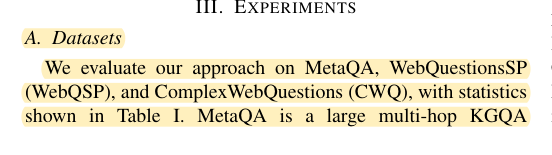
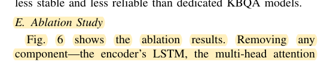
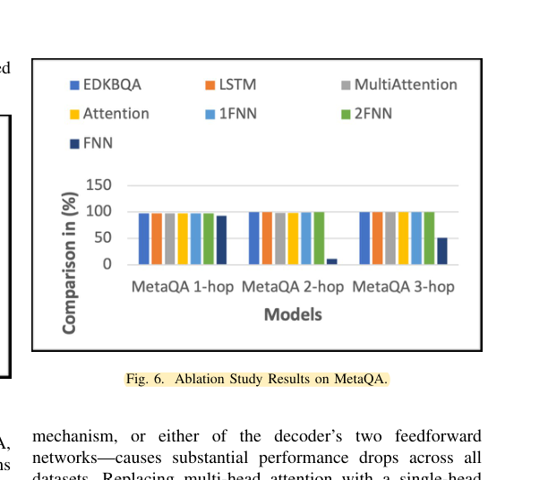

R31 · IEEE education study methods
Graph-reasoning ablation removes one component while preserving the task
Generative AI-Driven Knowledge Base Question Answering with Differentiable Knowledge Graphs for Sustainable Engineering Education
Sami Ahmed Haider, Mukesh Soni, Jehan Akbar, Samar Abbas, Khwaja Muthair Ahmad, Faisal Tariq, Masood-ur-Rehman, Adnan Zahid · 2026
IEEE EDUCON 2026; accepted author manuscript from the University of Glasgow, six text pages plus a copyright page
What the study investigates
EDKBQA addresses sequence and semantic information in multihop knowledge-graph QA. Its experiment structure is a same-conference example of graph-reasoning evaluation.
How it was studied
Section III uses MetaQA, WebQSP, and CWQ with existing QA-model comparators. Section III-E removes the LSTM, multihead attention, or decoding network and also substitutes single-head attention. Figure 6 presents MetaQA results for three hop counts. Hits@1 is the main metric.
Findings
The paper reports that the complete model outperforms several versions with removed components. These are algorithmic results on fixed QA data; no recruited-student educational intervention is reported.
Limits of the evidence
The accepted manuscript lacks a complete numerical ablation table, repeated seeds, and intervals. Dataset descriptions must be distinguished from the statement that CWQ is evaluated on validation data. Exact values must not be invented from plot legends. Some baseline names and reference entries do not correspond. We use the controlled-ablation structure, not its reporting completeness, as guidance.
How it informs DualGraph-OSCE
The paired unit is the same frozen dialogue input. The targeted ablation changes the cross-role consequence link while preserving other processing, with per-input outputs and intervals retained. Inputs for which the link is inapplicable provide a negative control: unexpected changes there suggest the switch altered more than its intended mechanism. The study need not reproduce large training datasets or introduce a graph neural network.
Where to cite it
Evaluation: a same-conference example of component removal, not a basis for sample size, clinical validity, or learning effects.
Possible manuscript wording
A same-conference graph-reasoning study removes modules to examine contributions. We disable a cross-role assessment dependency on fixed evidence and separately report inputs where that dependency is and is not applicable.
[R31·1]This is a manuscript-specific paraphrase, not a quotation from the source. The excerpts below define what the citation supports. The proposed method and its expected benefits are not findings of the cited paper.
Source passages and precise locations
Page numbers refer to physical pages in the saved original PDF, including any repository cover sheets. Compilation page numbers are listed separately. Yellow highlighting marks the passage used for the argument.
R31-E1Datasets, splits, and the stated CWQ evaluation set
Original PDF page 4. Highlight compilation page 442. The highlight identifies the passage used here; consult the full original page for its context.

R31-E2Component-removal experiment
Original PDF page 5. Highlight compilation page 443. The highlight identifies the passage used here; consult the full original page for its context.

R31-E3Figure 6: MetaQA ablation and legend
Original PDF page 5. Highlight compilation page 443. The highlight identifies the passage used here; consult the full original page for its context.
